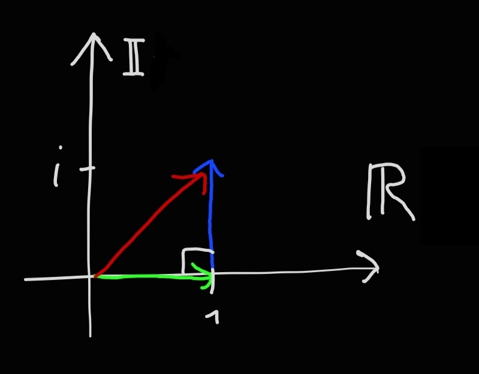
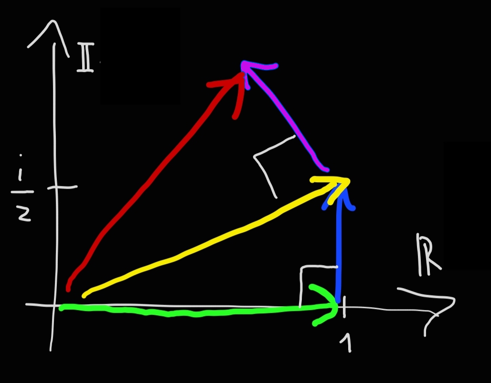
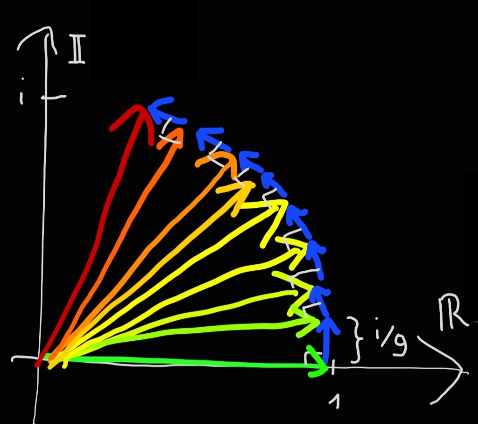

🇮🇹
Intuitive Explanation of Euler's Identity
Date: January 10, 2022
Introduction
The formula is:
$$e^{i\pi} = -1$$
The first time I saw this equation, I was shocked: how is it possible to tie so many different constants together in one line? What does \(\pi\) have to do with \(e\)? And above all, what does it mean to raise a number to an imaginary power? I will try to answer all these questions with an intuitive explanation. The only prerequisites are knowing what complex numbers are and having a vague idea of limits.
Continuous Interest in Real Banks
Let's imagine going to a bank, "Bank One," to invest our savings. "Bank One" offers us an annual interest of 100%, calculated once a year. Therefore, if we invest 1€, after one year we will have:
$$1 \text{€} + 100\% \cdot 1 \text{€} = 2 \text{€}$$
We decide to change banks and go to "Bank Two." This bank offers the same 100% annual interest, but calculated twice a year. So, we will be credited with an interest of 50% at the sixth month and at the twelfth month. Thus, at the sixth month we will have:
$$1 \text{€} + 50\% \cdot 1 \text{€} = 1.5 \text{€}$$
And at the twelfth month:
$$1.5 \text{€} + 50\% \cdot 1.5 \text{€} = 2.25 \text{€}$$
Now we go to "Bank Three" which, you guessed it, will give us an interest of 100% per year, calculated three times a year. Therefore, we will be credited with an interest of 33.333% in the fourth month, the eighth month, and the twelfth month. Our money will be:
$$1 \text{€} + 33.333\% \cdot 1 \text{€} = 1.3333 \text{€}$$
$$1.3333 \text{€} + 33.333\% \cdot 1.3333 \text{€} = 1.7777 \text{€}$$
$$1.7777 \text{€} + 33.333\% \cdot 1.7777 \text{€} = 2.3703 \text{€}$$
How much money will we have going to Bank Four, Five, Ten, Hundred, or even Infinity (where interest is continuous)? To find out, let's make the previous calculations more orderly. For example, at Bank 2 the money at the end of the year is:
$$\underbrace{\left(1 + 50\% \cdot 1 \right)}_{\text{money at the sixth month}} + 50\% \cdot \underbrace{\left(1 + 50\% \cdot 1 \right)}_{\text{money at the sixth month}} = \left(1 + \frac{1}{2}\right) + \frac{1}{2} \left(1 + \frac{1}{2}\right) = \left(1 + \frac{1}{2}\right)^2 = 2.25 \text{€}$$
For Bank 3 the money at the end of the year is:
$$
\left[\overbrace{
\underbrace{\left(1 + 33.3\% \cdot 1 \right)}_{\text{money at the fourth month}} + 33.3\% \cdot \underbrace{\left(1 + 33.3\% \cdot 1 \right)}_{\text{money at the fourth month}}
}^{\text{money at the eighth month}} \right]
+ 33.3\% \cdot
\left[\overbrace{ \underbrace{\left(1 + 33.3\% \cdot 1 \right)}_{\text{money at the fourth month}} + 33.3\% \cdot \underbrace{\left(1 + 33.3\% \cdot 1 \right)}_{\text{money at the fourth month}}}^{\text{money at the eighth month}} \right]
$$
$$
= \left[\left(1 + \frac{1}{3}\right) + \frac{1}{3} \left(1 + \frac{1}{3}\right)\right]
+ \frac{1}{3}
\left[\left(1 + \frac{1}{3}\right) + \frac{1}{3} \left(1 + \frac{1}{3}\right)\right]
$$
$$
= (1 + \frac{1}{3}) \cdot \left[\left(1 + \frac{1}{3}\right) + \frac{1}{3} \left(1 + \frac{1}{3}\right)\right]
= (1 + \frac{1}{3})^3 = 2.3703 \text{€}
$$
In general, at Bank \(n\), at the end of the year we will have the following amount of euros:
$$\left(1 + \frac{1}{n}\right)^n $$
If we let \(n\) grow to infinity, this amount tends to a number called \(e\), which is approximately \(2.718281828459045235360287471352662497757\) (it does not grow indefinitely). To generalize further, if in our "infinity" bank the interest was not 100% in a year (\(=1\)) but another number \(r\), the money at the end of the year would be:
$$ \lim_{n\to\infty} \left(1 + \frac{r}{n}\right)^n = e^r $$
And if I waited not one, but two years in the "bank \(n\)," then the interest would be counted 2n times and my money at the end of two years would be:
$$ \lim_{n\to\infty} \left(1 + \frac{r}{n}\right)^{2n} = e^{2r} $$
And if I waited \(t\) years, it would be:
$$ \lim_{n\to\infty} \left(1 + \frac{r}{n}\right)^{tn} = e^{rt} $$
This is exactly the formula used to define \(e\) raised to an imaginary number, as it means nothing to multiply a number by itself an imaginary number of times.
Multiplication of Complex Numbers
To understand the next part, we need to understand the geometric meaning of multiplying a complex number by \(i\) = \(\sqrt{-1}\).
Let's imagine having a complex number \(z = a + bi\). Multiplying \(z\) by \(i\) means performing the following operation:
$$i \cdot (a + bi) = ai + bi^2 = ai + b(-1) = -b + ai$$
Representing these two numbers as points on the complex number plane, we can notice that they are perpendicular to each other:
This applies to any value of \(a\) and \(b\). That is, if we multiply a complex number by \(i\), we get another complex number that is perpendicular to the first.
Continuous Interest in Imaginary Banks
What would happen if a bank gave me an interest not of 1, or any real number \(r\), but of an imaginary number \(i = \sqrt{-1}\)? In this case, my money would be a point in the complex number plane. For example, at "Imaginary Bank One" after one year I would have:
$$ \textcolor{#3dfc43}{1 \text{€}} + \textcolor{#3da6fc}{i \cdot 1 \text{€}} = \textcolor{red}{(1 + i) \text{€}} $$

Note how the gain \(i\) is perpendicular to the initial money \(1\), this is an important concept. From now on, I will no longer write the symbol \(\text€\) to avoid cluttering the notation. Going to "Imaginary Bank Two," where after one year I would have:
$$ \textcolor{#f0e62b}{ \biggl( } \textcolor{#3dfc43}{1} + \textcolor{#3da6fc}{ \frac{i}{2} } \textcolor{#f0e62b}{ \biggl) } +
\textcolor{#cb1fd1}{ \biggl[ }
\frac{i}{2} \textcolor{#f0e62b}{ \biggl( } \textcolor{#3dfc43}{1} + \textcolor{#3da6fc}{ \frac{i}{2} } \textcolor{#f0e62b}{ \biggl) }
\textcolor{#cb1fd1}{ \biggl] }
= \textcolor{red}{(1 + \frac{i}{2})^2}
$$

Also in this case the gain is perpendicular to the money on which the interest is calculated because it is the result of multiplication by \(i\). At "Imaginary Bank Nine":

Note that the length of the blue dashed line is \( (1 / 9) \cdot 9 = 1 \). Going to "Imaginary Bank Infinity," the blue dashed line becomes an arc of a circle of length one (so it corresponds to one radian) and the vector "initial money" has been rotated by one radian around the origin.
Therefore the formula \(e^{it}\) (that of continuous interest) represents a point rotating around the origin in the complex number plane as \(t\) increases, which is precisely the angle between the point and the positive real number axis expressed in radians.
Conclusion
Therefore the formula \(e^{i\pi}\) represents a point rotating by \(\pi\) radians around the origin (180 degrees), which is precisely the point -1. This is the geometric meaning of Euler's identity.